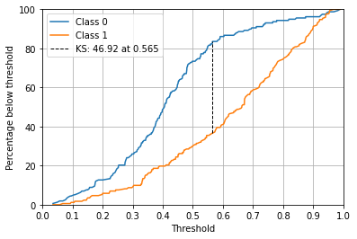

y_test[:5], y_test_pred[:5](array([0, 0, 1, 0, 1]),
array([0.3143867 , 0.13123316, 0.15998113, 0.35006658, 0.83034574]))April 28, 2022
Kolmogorov-Smirnov metric (ks metric) is derived from K-S test. K-S test measures the distance between two plotted cumulative distribution functions (CDF).
To use it as a metric for classification problem we see the distance of plotted CDF of target and non-target. It can be also defined as the maximum distance between TNR and FNR. 🔗
The model that produces the greatest amount of separability between target and non-target distribution would be considered the better model.
Scale-invariant. It measures how well predictions are ranked, rather than their absolute values.
Threshold-invariant. It measures the quality of the model’s predictions irrespective of what classification threshold is chosen.
Although KS is a single metric. KS table / Gains Table can be used to take different actions for different bins.
The following steps can be also done with pandas Consider the following example, y_test represents true target values, here as 1s and 0s. and y_test_pred as prediction probabilities.
(array([0, 0, 1, 0, 1]),
array([0.3143867 , 0.13123316, 0.15998113, 0.35006658, 0.83034574]))array([0.63291139, 1.26582278, 1.89873418, 1.31733883, 1.95025022])fig, ax = plt.subplots(1, 1)
# plot cumilative percent
ax.plot(ks_arr[:, 1], cs_N, label="Class 0")
ax.plot(ks_arr[:, 1], cs_P, label="Class 1")
# plot max seperation
ks_threshold = ks_arr[cs_diff.argmax(), 1]
ax.axvline(
x=ks_threshold,
ymin=sorted([cs_P[cs_diff.argmax()] / 100, cs_N[cs_diff.argmax()] / 100])[0],
ymax=sorted([cs_P[cs_diff.argmax()] / 100, cs_N[cs_diff.argmax()] / 100])[1],
c="black",
linewidth=1,
linestyle="--",
label=f"KS: {ks.round(2)} at {ks_threshold.round(3)}",
)
# plot settings
ax.set_xlim([0, 1])
ax.set_ylim([0, 100])
ax.set_xlabel("Threshold")
ax.set_ylabel("Percentage below threshold")
ax.set_xticks(np.linspace(0, 1, 11))
ax.grid()
ax.legend()
plt.show()
There is a strong relationship between AUC and KS.
from sklearn.metrics import roc_curve
fpr, tpr, thresholds = roc_curve(y_test, y_test_pred)
(((tpr-fpr).max())*100).round(2), ks.round(2)(46.92, 46.92)Explore this Streamlit App to understand more about the relationship between them. Also refer to Youden’s J statistic.
# dataframe with y_true and y_pred
df = pd.DataFrame()
df["score"] = y_test_pred
# one hot encoding the dependent variable
df["class_n"] = 1 - y_test
df["class_p"] = y_test
# decile bins of prediction scores after ordering them
df["bin"] = pd.qcut(df.score.rank(method="first"), 10, labels=list(range(0, 10, 1)))
df.head()| score | class_n | class_p | bin | |
|---|---|---|---|---|
| 0 | 0.314387 | 1 | 0 | 1 |
| 1 | 0.131233 | 1 | 0 | 0 |
| 2 | 0.159981 | 0 | 1 | 0 |
| 3 | 0.350067 | 1 | 0 | 2 |
| 4 | 0.830346 | 0 | 1 | 8 |
grouped = df.groupby("bin", as_index=False)
ks_table = pd.DataFrame()
ks_table["min_score"] = grouped.min().score
ks_table["max_score"] = grouped.max().score
ks_table["n_class_n"] = grouped.sum().class_n
ks_table["n_class_p"] = grouped.sum().class_p
ks_table["n_total"] = ks_table.n_class_n + ks_table.n_class_p
ks_table| min_score | max_score | n_class_n | n_class_p | n_total | |
|---|---|---|---|---|---|
| 0 | 0.035500 | 0.224967 | 21 | 12 | 33 |
| 1 | 0.226262 | 0.327676 | 27 | 6 | 33 |
| 2 | 0.328646 | 0.377685 | 19 | 14 | 33 |
| 3 | 0.381554 | 0.437930 | 25 | 8 | 33 |
| 4 | 0.442221 | 0.491976 | 23 | 10 | 33 |
| 5 | 0.495512 | 0.575724 | 17 | 16 | 33 |
| 6 | 0.577944 | 0.671211 | 9 | 24 | 33 |
| 7 | 0.671344 | 0.757899 | 6 | 27 | 33 |
| 8 | 0.765076 | 0.874251 | 4 | 29 | 33 |
| 9 | 0.874542 | 0.988560 | 7 | 26 | 33 |
The graph above show the difference in classification for each decicles.
This difference varies depending on performance.
KS 25 |
KS 50 |
KS 75 |
count_class_n = df.class_n.sum()
count_class_p = df.class_p.sum()
ks_table["%_class_n"] = (ks_table.n_class_n / count_class_n) * 100
ks_table["%_class_p"] = (ks_table.n_class_p / count_class_p) * 100
ks_table["cs_class_n"] = (ks_table.n_class_n / count_class_n).cumsum() * 100
ks_table["cs_class_p"] = (ks_table.n_class_p / count_class_p).cumsum() * 100
ks_table["cs_diff"] = np.abs(ks_table["cs_class_n"] - ks_table["cs_class_p"])
ks_table.style.format(
"{:.1f}%", subset=["%_class_n", "%_class_p", "cs_class_n", "cs_class_p", "cs_diff"]
)| min_score | max_score | n_class_n | n_class_p | n_total | %_class_n | %_class_p | cs_class_n | cs_class_p | cs_diff | |
|---|---|---|---|---|---|---|---|---|---|---|
| 0 | 0.035500 | 0.224967 | 21 | 12 | 33 | 13.3% | 7.0% | 13.3% | 7.0% | 6.3% |
| 1 | 0.226262 | 0.327676 | 27 | 6 | 33 | 17.1% | 3.5% | 30.4% | 10.5% | 19.9% |
| 2 | 0.328646 | 0.377685 | 19 | 14 | 33 | 12.0% | 8.1% | 42.4% | 18.6% | 23.8% |
| 3 | 0.381554 | 0.437930 | 25 | 8 | 33 | 15.8% | 4.7% | 58.2% | 23.3% | 35.0% |
| 4 | 0.442221 | 0.491976 | 23 | 10 | 33 | 14.6% | 5.8% | 72.8% | 29.1% | 43.7% |
| 5 | 0.495512 | 0.575724 | 17 | 16 | 33 | 10.8% | 9.3% | 83.5% | 38.4% | 45.2% |
| 6 | 0.577944 | 0.671211 | 9 | 24 | 33 | 5.7% | 14.0% | 89.2% | 52.3% | 36.9% |
| 7 | 0.671344 | 0.757899 | 6 | 27 | 33 | 3.8% | 15.7% | 93.0% | 68.0% | 25.0% |
| 8 | 0.765076 | 0.874251 | 4 | 29 | 33 | 2.5% | 16.9% | 95.6% | 84.9% | 10.7% |
| 9 | 0.874542 | 0.988560 | 7 | 26 | 33 | 4.4% | 15.1% | 100.0% | 100.0% | 0.0% |
%_class_n for 0th bin is 21 / total number of class_n.
cs_class_n is the same but cumulatively summed.
cs_diff is the difference between cs_class_n and cs_class_p
KS is the max difference between cumulatively summed rate of target and cumulatively summed non-target. i.e. maximum value of cs_diff
fig, ax = plt.subplots(1, 1)
ax.plot(ks_table["cs_class_n"], label="Class 0")
ax.plot(ks_table["cs_class_p"], label="Class 1")
ks_tier = ks_table["cs_diff"].idxmax()
ax.axvline(
x=ks_tier,
ymin=ks_table.loc[ks_tier, "cs_class_n"] / 100,
ymax=ks_table.loc[ks_tier, "cs_class_p"] / 100,
c="black",
linewidth=1,
linestyle="--",
label=f"KS: {ks_table['cs_diff'].max().round(2)} at tier:{ks_tier}",
)
ax.set_xlim([0, 9])
ax.set_ylim([0, 100])
ax.set_xlabel("Tiers")
ax.set_ylabel("Cumilative Percentage")
ax.set_xticks(ks_table.index)
ax.grid()
ax.legend()
plt.show()Binned KS are useful when you intent to have different actions for differnt bins. For example in the case of credit scoring you might give different APRs to customers falling in different bins.